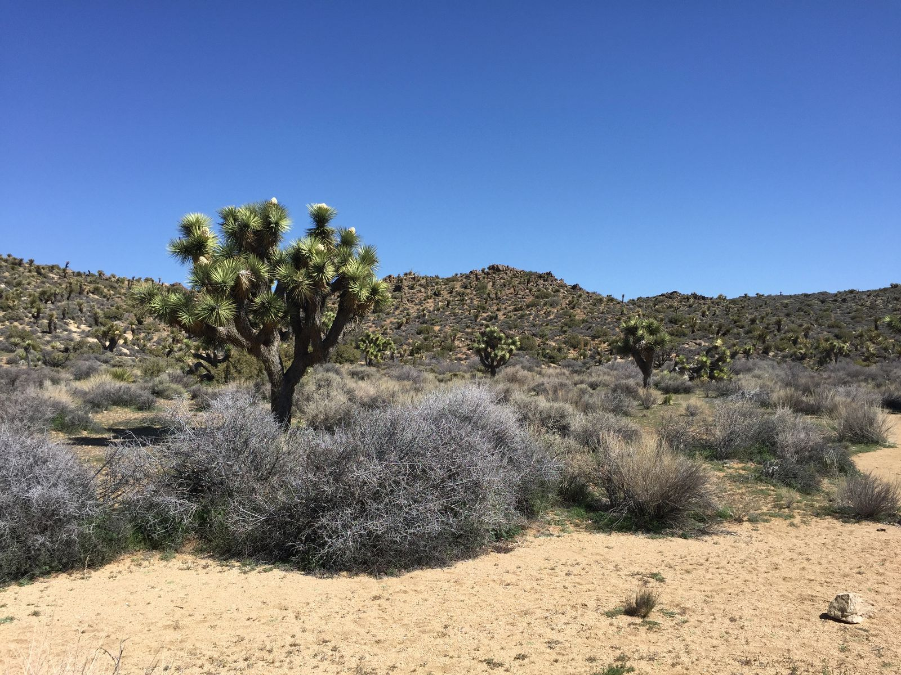
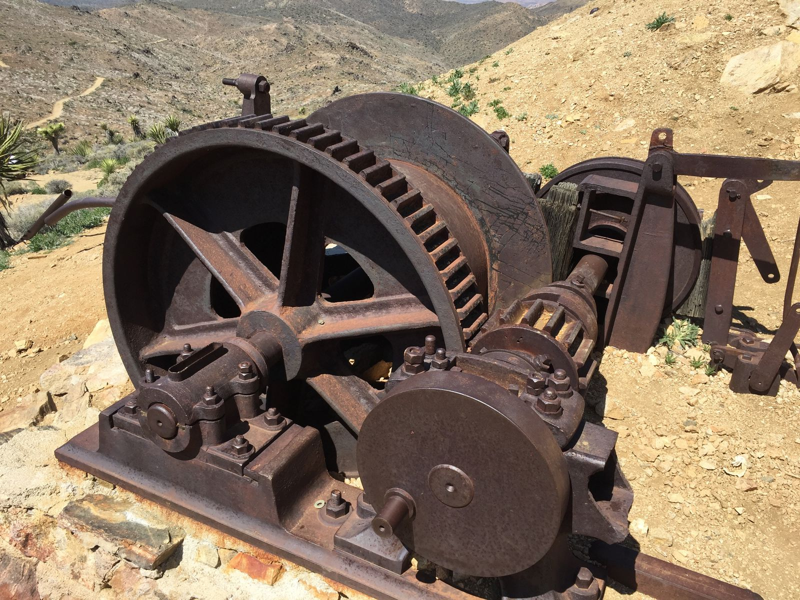
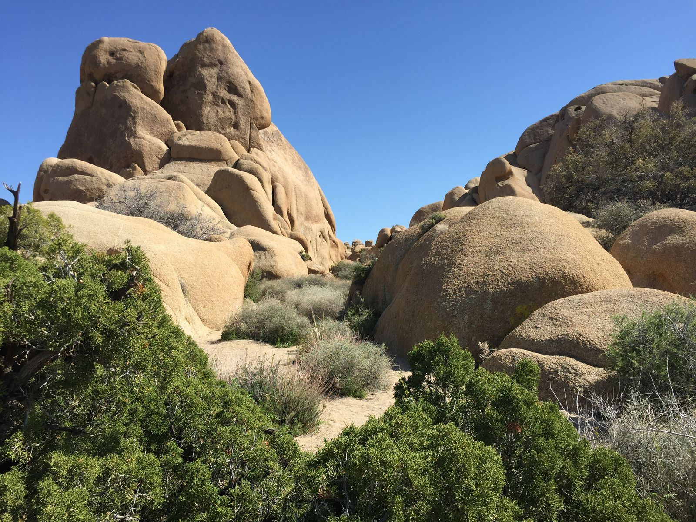
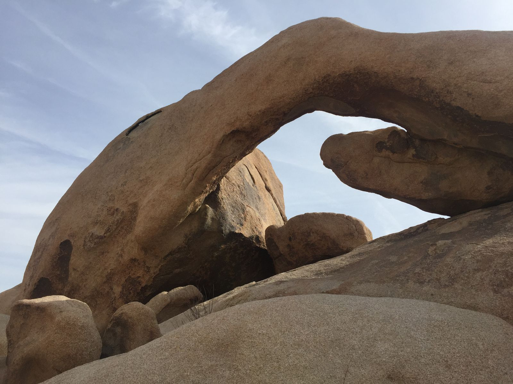

Joshua Tree
Day two at Joshua Tree National Park involved actually going into the park. Surprisingly, it was not quite as beautiful as the first day in Black Rock Canyon. That's not to say it was bad—in fact it was quite good.
The day started out with spotting a desert black-tailed jackrabbit at the start of the Lost Horse Mine Trail ("moderate", 4 miles). The trail is named after a gold mine that was created when someone found gold while searching for a lost horse.


After completing that trail, we went to Split Rock Loop ("moderate", 2.5 miles) and the landscape become, of course, a lot rockier. In search of more rocks, we went to White Tank camping area where there were massive rocks to climb, including Arch Rock.


To end the day, we went to the Cholla Cactus Garden. It was incredible. More here.